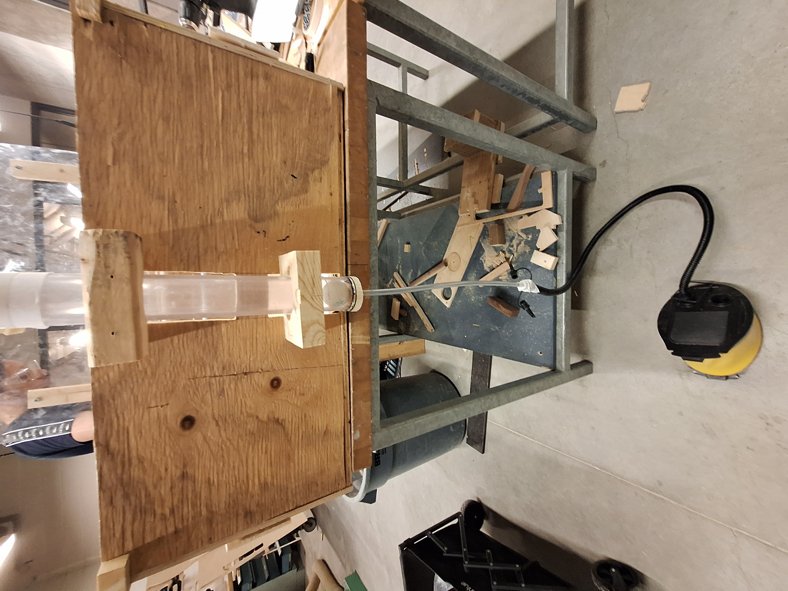
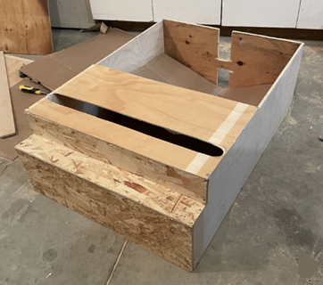
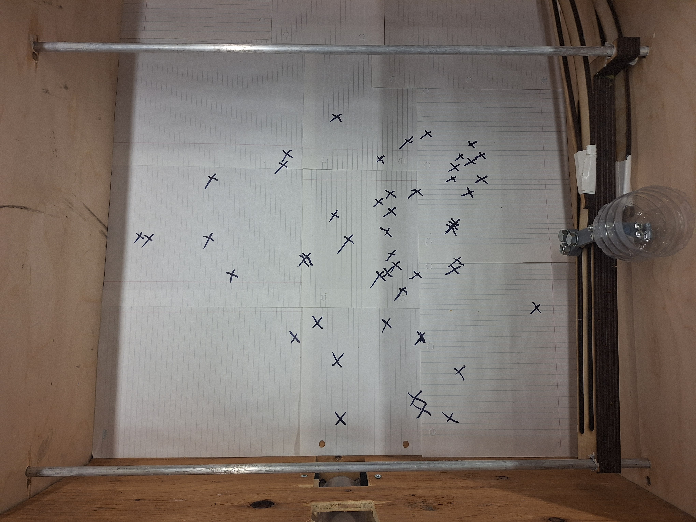
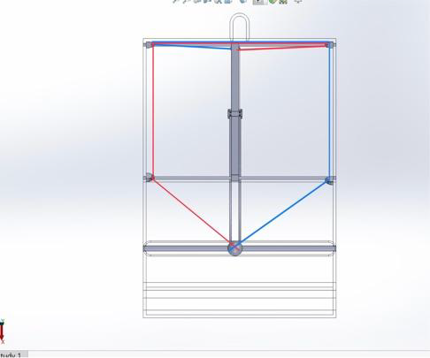

Launch & Snatch
Mechanical Toy
December 2, 2025 | ME100 Design Project

The Challenge
When our team of five mechanical engineering students was tasked with designing a toy for Spin Master, we knew we wanted to create something unique: a fully mechanical tabletop arcade game with no electronic components. The concept was simple but ambitious—launch a ping pong ball into the air and catch it with a moving basket controlled by a single joystick.
We called it "Launch & Snatch," and over the course of two months, we learned that bringing a mechanical system from concept to reality involves far more problem-solving than we initially anticipated.
The Design Process
Starting with Requirements
Before we could start building, we needed to define what success looked like. Our constraints were clear:
- Budget: Maximum $150 CAD
- Base size: No larger than 1m × 1m
- Safety: Launch speed under 7.7 m/s (meeting toy safety standards)
- Playability: Minimum 0.5m launch height to give players reaction time
- Control: Single joystick controlling two-axis movement
The most interesting constraint? Absolutely no electronics. Everything had to be purely mechanical.

Breaking Down the Problem
We identified five core functions our toy needed to accomplish:
- Launch the ball safely and consistently
- Move the catcher in two axes with one control
- Randomize trajectories to keep the game interesting
- Hold the ball securely when caught
- Reset quickly for continuous play
The Launcher: Finding the Right Power Source
Our first major decision was how to launch the ball. We considered several options:
Option 1: Spring Mechanism
Pros: Mechanically stable, compact
Cons: Complex release mechanism, potential safety hazard with high instantaneous forces
Option 2: Air Pressure (Our Choice)
Pros: Consistent performance, inherently safe, easily adjustable
Cons: Requires external pump component

We chose a foot-pump system connected to a 1.7-inch diameter PVC pipe. The narrow pipe diameter was crucial—it's only slightly larger than a ping pong ball (40mm), which means almost all the air is forced upward rather than escaping around the ball.
Testing Results:
- Average peak height: 0.67 meters ✓ (exceeded our 0.5m requirement)
- Initial velocity: 3.8 m/s ✓ (well below the 7.7 m/s safety limit)
- Consistency: Excellent across multiple trials
The launch system also naturally provided randomization. Depending on how hard and fast the player pumps, the ball launches at slightly different angles and heights—no complex mechanisms required.
The Real Challenge: Two-Axis Control
This is where things got interesting. How do you control movement in two directions (left-right AND forward-backward) with a single joystick, using only mechanical components?
The Solution: Crank-Slotted Lever Mechanism
After evaluating motor systems (too expensive, violates our mechanical-only rule) and hydraulics (too slow, potential leakage), we settled on a crank-slotted lever mechanism.

How it works:
- The joystick connects to a slotted bar that slides along three horizontal aluminum rods
- Forward/backward joystick movement slides the entire system along the x-axis
- Left/right joystick movement rotates within the slot, pushing the catcher along the y-axis
- The catcher holder uses three M8 screws through slots to distribute forces and keep the basket upright
The concept was elegant. The execution? Not so much.
The Friction Problem
During initial testing with wooden dowels, we discovered our system had a major flaw: the lateral (left-right) movement was inconsistent and often got stuck. The forward-backward motion worked beautifully, but side-to-side movement was frustrating.
The Root Cause: When you push the joystick left or right, you're not just translating the catcher—you're creating a rotational force. This causes the slotted bar to bind against the guide rails, similar to how a drawer jams when you pull it at an angle.
Iteration 1: Better Materials
We replaced the wooden dowels with aluminum rods and applied grease to reduce friction.
Result: Improvement, but not enough. The binding issue persisted.

Building the Prototype
While solving the control problem, we constructed the main frame:
Materials
- 1/4'' Plywood
- 3D printed grey PLA catcher holder
- PVC pipe 1.7'' ID x 2'' OD x 16''
- Poly tube 1/4'' ID x 3/8'' OD x 11''
- Machine Screws M4 x 6mm
- Machine Screws M4 x 60mm
- 2 Wooden dowels 3/8'' x 660mm
- Wooden dowel 1'' x 390mm
- Machine Screws M8 x 70mm
- Washers 8mm flat
- Washers 4mm flat
- Foot pump
- Ping pong ball
- Round aluminum bar 3/8'' x 660mm
- Plastic bottle
Specifications:
- Total dimensions: 905mm × 650mm × 300mm
- Tools: Handsaws, electric jigsaw, drill press

Key Features:
- Stair-stepped front panel for joystick clearance
- Notched rear panel for launcher mounting
- Clear plastic windshield to protect players from errant launches
- Chamfered edges on all openings for safety
The laser-cut components and 3D-printed parts were manufactured at the university's rapid prototyping center, ensuring precision where it mattered most.
Testing: Does It Actually Work?
With the prototype assembled, we conducted three critical tests:
Test 1: Launch Performance
We filmed 5 launches in slow motion with a tape measure for reference.
Results:
- Peak heights ranged from 64.5 cm to 70.2 cm
- Average: 67 cm ✓
- Standard deviation: Low, indicating consistency
Test 2: Randomization
We positioned the catcher at one side and launched the ball 50 times, marking each landing point with an X.

Using OpenCV and Python, we converted the marked positions to a scatter plot and analyzed the distribution.

Results:
- Mean distance from center: 324.87 pixels
- Standard deviation: 141.41 pixels
- No repeated landing spots within any 10-launch sequence ✓
The passive randomization from variable pump force worked perfectly.
Test 3: Playability
Over approximately 60 play attempts, we successfully caught the ball 8 times.
Catch rate: ~13%
While this might sound low, it's actually ideal for a skill-based game. Too easy and it's boring; too hard and it's frustrating. Players had enough reaction time to position the catcher, and successful catches felt rewarding.
Total Project Cost: $127.61 (under our $150 budget ✓)
The Pulley System Solution
The lateral movement problem was the one major issue we couldn't fully resolve during the prototyping phase. However, through analysis and simulation, we developed a promising solution: a dual-pulley counter-torque system.
The Concept:
Instead of fighting the rotational forces, work with them. By adding pulleys and cables that pull on the opposite end of the slotted bar, we can create a counter-moment that cancels out the binding torque.

How it works:
- Blue and red cables route through four stationary pulleys mounted to the frame
- When the joystick pushes left, creating clockwise rotation, the cable system pulls right with equal force
- The net rotational force becomes zero—pure translation remains
Finite Element Analysis
We tested this theory using Ansys Discovery to simulate friction forces:

Without pulley system:
- Friction increases non-linearly with input force
- Clear upward curve indicating progressive binding
With pulley system:
- Friction remains constant even as input force reaches 50N
- The pulley system successfully decouples input force from frictional resistance
The analysis suggests this modification could reduce friction by approximately 60% and eliminate the binding issue entirely.
What I Learned
This project taught me far more than any textbook could about mechanical design:
1. Initial designs rarely survive contact with reality
Our CAD model looked perfect. The actual prototype revealed issues we never anticipated. Iteration isn't optional—it's the process.
2. Friction is the enemy of all mechanical systems
We spent more time fighting friction than any other challenge. Material selection, surface finish, lubrication, and alignment all matter immensely.
3. Constraints drive creativity
The "no electronics" requirement forced us to think differently. Sometimes limitations lead to better solutions than unlimited options would.
4. Testing reveals truth
We could theorize all day about whether our randomization would work, but 50 launches with marked positions gave us actual data. Quantitative testing beats assumptions.
5. Simple mechanisms can be complex
A crank-slotted lever is conceptually straightforward, but making it work smoothly in practice involves managing forces, moments, friction, alignment, and material properties simultaneously.
6. Teamwork multiplies capability
Five people with different strengths—CAD modeling, machining, analysis, fabrication, testing—accomplished far more than any individual could. Clear task division was essential.
Next Steps and Recommendations
If we were to continue developing this toy, here's what I'd focus on:
Immediate Priorities:
- Implement the pulley system and validate the FEA predictions with physical testing
- Improve guide rail alignment with precision-machined brackets
- Add ball bearings at key friction points for smoother motion
- Design an automatic ball return that feeds directly back to the launcher
Production Considerations:
- Replace plywood with injection-molded plastic for consistency
- Standardize all components for easier assembly
- Add visual appeal with colors and graphics
- Consider a dual-player competitive mode
Market Potential:
The toy successfully demonstrates that engaging gameplay doesn't require electronics. For parents concerned about screen time, a purely mechanical game has real appeal. The skill-based nature creates a satisfying difficulty curve—easy to understand, challenging to master.
Final Thoughts
The Launch & Snatch project embodied everything I love about mechanical engineering: taking an idea from concept to working prototype, solving unexpected problems, and learning from both successes and failures.
Did we build a perfect toy? No. Did we build a functional prototype that proved the concept viable? Absolutely.
The lateral movement issue reminds me that engineering is iterative. We identified the problem, understood its root cause, proposed a solution, and validated it through analysis. That's the engineering process working exactly as it should.
Would I recommend Spin Master continue development? Yes. The core mechanics work, the gameplay is engaging, and the remaining challenges have clear engineering solutions.
Most importantly, this project reinforced why I became an engineer: the satisfaction of making something physical that didn't exist before, using nothing but materials, physics, and creative problem-solving.
Project Statistics
- Total time investment: 8 weeks
- Budget used: $127.61 / $150
- Team members: 5
- Problems solved: Too many to count
- Lessons learned: Countless
Technical Specifications
Dimensions:
- Base: 905mm × 650mm
- Height: 300mm
- Play area: 650mm × 465mm
Performance:
- Average launch height: 0.67m
- Launch velocity: 3.8 m/s
- Randomization: 141 pixel standard deviation
- Catch success rate: 13%
Acknowledgments
Team Members:
- Shaofu Wang - CAD modeling, materials sourcing, control system
- Jeffery Ross - Laser cutting, frame modifications, launcher
- Uday Toor - Frame manufacturing, control stick, modifications
- Evan Stack-Couture - Launcher design and testing
- Jorge Ayala - Control stick, machine shop fabrication
Special Thanks:
- Professor Andrew Milne & Professor Abdullah Barakat (ME100)
- University of Waterloo Machine Shop
- Rapid Prototyping Center staff
This project was completed as part of ME100: Introduction to Mechanical Engineering Practice I at the University of Waterloo, December 2025.